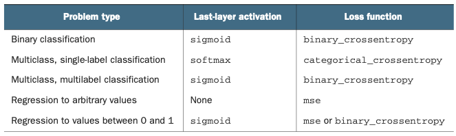

A representative set of data (the more complex the problem, the more data)
A label for each dataset, that describes the data
Data & labels must be divided into
training data
training labels
validation data
validation labels
where the training data is usually about 75% of the data, 25 % for validation
Additionally you might reserve some for testing (60 % training, 20 % validation,
20 % testing)
test data
test labels
Hint
To tune your model based on the validation set leads to overfitting
towards it, especially when having little data. Validation data
should change during training. Two ways:
k-fold validation: Divide training & validation into same sized batches,
assign one to validation and the rest to training. Train as many
times as there are batches, each time using a different batch as
validation set. Lastly, calculate the mean of all iterations.
k-fold validation, done multiple times (same batch sizes), while
shuffling all data before creating batches.
Transform data into tensors (1D, 2D, 3D, or more):
2D: Vector data (samples, data_values)
3D: Timeseries data or sequence data (samples, time_or_sequence, data_values)
4D: Image data (samples, height_index, width_index, color_channel_values)
5D: Video data (samples, frame, height_index, width_index, color_channel_values)
One-Hot Encode the labels: 2D tensor (sample, label):
Label tensor shape must be (amount_of_data_samples, amount_of_classes)
Make sure the data range of all values is similar. Having one feature ranging from
0 to 1 and another from 100 to 10000 is problematic. A best practice is
normalization:
\[val_{new} = \frac{val - \mu}{\sigma}\]
Subtract the mean value of a feature and divide by its standard deviation.
This result into all values ranging around zero.
Add missing data (if applicable): Missing data fields can be assigned to 0
(if that is not a meaningful value)
Selecting the amount and the size of hidden layers within a model is crucial:
too few layers or too few nodes -> information loss, resulting in bad accuracy (underfitting)
too many layers or too many nodes -> slow training, overfitting
The goal is to create a model, which has a good accuracy on test data.
If the model is too smart, in other words, is too much tailored onto the training data,
it will not perform well on test data, but perfect on the training data -> overfitting.
A model must be smart enough to deal with typical data, but not “too smart”, consequently
performing bad on new data.
Rule of thumb
As a starting point, the amount of nodes in a hidden layer should be the
average between the nodes of the previous layer and the proceeding layer.
Start with two hidden layers, working your way up to see if it improves on accuracy
The goal is to have as small weights as needed to sufficiently describe the data (even
though larger weights might do this just as good), in order to reduce the chance
of overfitting.
The most common ones are L1 regularization and L2 regularization.
Take this table as a starting point of choosing your loss function:

Choosing the last-layer activation function and loss function
categorical_crossentropy:
Measures the distance between the classifier’s predictions and the labels.
The lower the loss, the better the classifier. Also referred to as Cross-Entropy.
Suitable for: Good choice for categorical data (“Does this dataset belong
to a certain category?”)
mse (mean squared error):
Measures the square of the difference between the predictions and the targets.
Suitable for: The mean squared error is a widely used loss function for
regression problems (Regression means, prediction of a value).